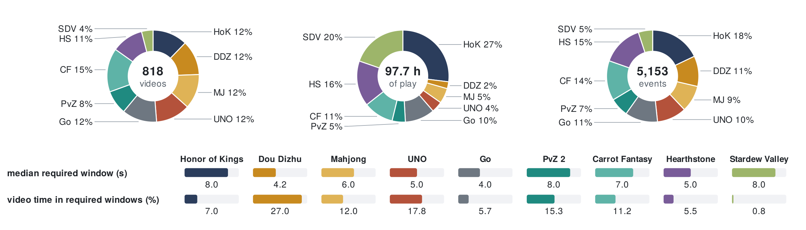
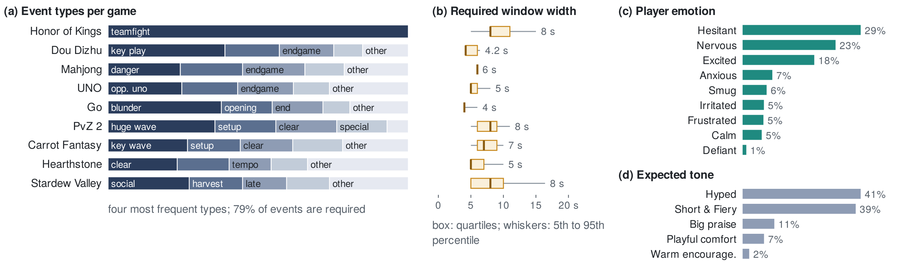
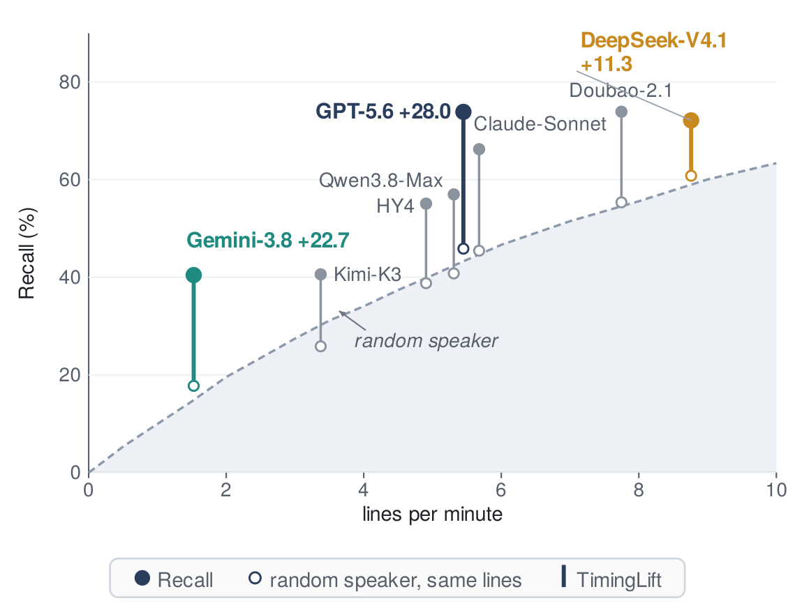

Game companionship as two interaction modes
CoPlayLearning When to Speak and What to Say as Game Companions
For a game companion, what to say and when to say it are one decision — and for most of a session the right decision is silence.
Question-driven video benchmarks pose the question, so they score the answer and never the decision to intervene. CoPlayBench scores that decision: 818 first-person videos from nine games carry 5,153 annotated events, each with a speaking window, success criteria and a reference reply. CoPlayer, trained on a disjoint 1,635-video Train split, pairs sound advice with fitting support on 34.3% of advice questions and lands unprompted lines inside required windows far above a frequency-matched random speaker. It still fails about two thirds of advice questions.
34.3%
StratEmo, reactive
sound advice and fitting support, on the 7,037 advice questions of 9,103
14.5% best of eight frontier models · 4.7% before training · 99.1% for the reference replies
+43.7 pp
TimingLift, proactive
unprompted lines landing inside required windows, above a frequency-matched random speaker
+28.0 pp best frontier model · 0 pp for the random speaker by construction
55.1
GroundF1, reactive
must-mention F1, with wrong claims counted as false positives
42.1 best frontier model · 26.7 → 48.8 → 55.1 across base, supervision and reinforcement learning
5,153
annotated events
each with a speaking window, success criteria and a reference reply
818 Bench videos, nine games, 97.7 hours · a disjoint 1,635-video Train split
One recorded event · nobody asked
The companion has to notice the moment itself.
Plants vs. Zombies 2, 136 seconds in: a Huge Wave is announced and a snowstorm follows. No question was posed. The required speaking window is three seconds wide, and each model is streaming the same session under the same rules. The marks below are the recorded decision steps of this one video, taken from the authors' own figure source.

CoPlayer sound · support 3/4
Another huge wave! Don't hoard sun, add Bonk Choys and Wall-nuts now emoji omitted
Warns of the wave and names Bonk Choys and Wall-nuts.
GPT-5.6-Sol not sound · support 1/4
Huge wave incoming with only 25 sun—grab those suns fast and reinforce lane four, where the armored zombie is deepest.
Warns of the wave but sends the defense to lane four.
DeepSeek-V4.1-Flash not sound · support 0/4
Sun's down to 25 and a zombie's chewing your right-side Threepeater — hold off on planting, let the lane clear first.
Misses the wave and says hold off planting.
Verdicts are the shipped Qwen3.8-Flash judge's, not human ground truth. One event from one video: a selected example, not a population estimate.
The gap
A posed question already tells a model when to speak.
Video benchmarks have advanced perception and reasoning over complete clips, and online variants move the question into a stream. They evaluate responses to given tasks rather than the decision to intervene, so a model is never penalised for speaking when nothing calls for it.
A companion is not a commentator either: it addresses the person playing and must commit before the next decision. A correct but late reply and a timely but ungrounded one both fail the player, so content, support and timing have to be scored together.
- Grounded in what is on screen. An unprompted line has to concern the player's next decision, not describe the scene.
- Supportive of this player, now. Support earns credit only when it is tied to the situation and matches the expected tone.
- Delivered while the event is still actionable. A window that passes while the model generates counts as missed.
- Withheld when silence is better. Required windows cover 7.4% of Bench video time; the rest of the session is quiet.

CoPlayBench
Every score is tied to one annotated event.
Identifying the moments worth attention is subjective, so each video is annotated independently three times and only agreed events survive. Three frontier models (Claude-Opus-5.5, GPT-6.1-Sol, Gemini-4-Argon) mark events; those marked by at least two are retained, 21,494 identified down to 15,689 agreed; three master's-level human annotators then keep only the ones they unanimously judge appropriate. Each retained event carries a time span, a tier, a speaking window, up to three questions, must-mention points, forbidden statements, a tone, a word limit and a reference reply.
![Two-part diagram. (a) Building CoPlayBench: 2,534 first-person videos from 9 games are annotated independently by Claude-Opus-5.5, GPT-6.1-Sol and Gemini-4-Argon; events whose time spans overlap are retained, 21,494 to 15,689 events. One retained Honor of Kings teamfight shows a player question, a 728 to 732 second pre-event alert window, a reference reply and a must-not item. (b) Evaluation: the reactive track answers from 16 frames of the last 60 seconds and is scored on game, player and time; the proactive track observes every step, and a timeline shows two required windows hit and one missed.](assets/figures/coplaybench-figure2.png)
Table 1 Bench split by game.
Nine games set nine different timing problems. Dou Dizhu needs a reply for 27.0% of its video and leaves a median 4.2 s to speak; Stardew Valley leaves 8.0 s but its windows cover 0.8% of the video. Across the Bench split, 7.4% of video time sits inside a required window, so abstaining is most of the task.
| Game | Videos | Hours | Events | Window (s) | Cover (%) |
|---|---|---|---|---|---|
| Honor of Kings | 100 | 26.4 | 923 | 8.0 | 7.0 |
| Dou Dizhu | 100 | 2.4 | 552 | 4.2 | 27.0 |
| Mahjong | 100 | 5.2 | 482 | 6.0 | 12.0 |
| UNO | 99 | 3.8 | 533 | 5.0 | 17.8 |
| Go | 100 | 10.2 | 591 | 4.0 | 5.7 |
| Plants vs. Zombies 2 | 69 | 4.5 | 340 | 8.0 | 15.3 |
| Carrot Fantasy | 126 | 10.3 | 722 | 7.0 | 11.2 |
| Hearthstone | 91 | 15.6 | 751 | 5.0 | 5.5 |
| Stardew Valley | 33 | 19.2 | 259 | 8.0 | 0.8 |
| Total | 818 | 97.7 | 5,153 | 6.0 | 7.4 |
| Game | Videos | Hours | Events |
|---|---|---|---|
| Honor of Kings | 100 | 26.4 | 923 |
| Dou Dizhu | 100 | 2.4 | 552 |
| Mahjong | 100 | 5.2 | 482 |
| UNO | 99 | 3.8 | 533 |
| Go | 100 | 10.2 | 591 |
| Plants vs. Zombies 2 | 69 | 4.5 | 340 |
| Carrot Fantasy | 126 | 10.3 | 722 |
| Hearthstone | 91 | 15.6 | 751 |
| Stardew Valley | 33 | 19.2 | 259 |
| Total | 818 | 97.7 | 5,153 |
| Game | Window (s) | Cover (%) |
|---|---|---|
| Honor of Kings | 8.0 | 7.0 |
| Dou Dizhu | 4.2 | 27.0 |
| Mahjong | 6.0 | 12.0 |
| UNO | 5.0 | 17.8 |
| Go | 4.0 | 5.7 |
| Plants vs. Zombies 2 | 8.0 | 15.3 |
| Carrot Fantasy | 7.0 | 11.2 |
| Hearthstone | 5.0 | 5.5 |
| Stardew Valley | 8.0 | 0.8 |
| Total | 6.0 | 7.4 |
Coverage is measured with a 1 s tolerance. Of the 2,534 annotated videos, 2,453 retain common coverage from all three annotators; these split into 818 Bench and 1,635 Train videos.
- Different paces, by design. Nine games vary decision pace, on-screen text and whether the player acts alone: a five-versus-five MOBA, four card and board games driven by engines from one seat, and four visual games from public gameplay series.
- Required events are 79% of all events, but their types differ: teamfights in Honor of Kings, key waves in Carrot Fantasy, social and harvest moments in Stardew Valley.
- Hidden information stays hidden. Engines annotate the card and board games, but their numerical evaluations are withheld from every evaluated model, which sees only pixels.
- A timing audit shifted 430 windows, dropped 20 events and removed 13 must-mention points. 198 questions (2.2%) still contain a reference reply that refers to the future.




Evaluation protocol
Raw recall rewards talking, so timing is scored against a random speaker.
Both tracks show only what the player has seen: no game state, no audio, no future frames. The reactive track answers a posed question from 16 frames of the preceding 60 seconds. The proactive track watches the stream after one opening request and, every Δt seconds, decides whether to speak, what to say and what to note in a memo of at most 25 words.
Two metrics carry the paper's claims, and both are built to resist the obvious shortcut.
StratEmo
sound strategy and support ≥ 3 of 4, in the same reply
Advice earns joint credit only when the strategy is sound and the support is tied to the specific situation. A reply that comforts without advising, or advises without reading the player, scores zero.
TimingLift
Recall − Recall of a random speaker with the same number of lines
Recall grows with the number of utterances even when their times are uninformed. The random speaker places the same count uniformly over the covered stream, so it scores 0 in expectation and a positive lift means lines concentrate in required windows.
TimingLift is not confound-free: fewer observed frames mean fewer chances to speak, so SeenRate and Recall-O describe observed-window recall and do not separate perception from timing.


Table 7 Metric abbreviations used in Tables \ref{tab:reactive} and \ref{tab:proactive}, with definitions for every reported metric.
Every metric name on this page, defined once. The two that carry the claims are StratEmo and TimingLift; the rest describe grounding, facts, emotion, latency, restraint and rule compliance.
| Acronym | Meaning | Acronym | Meaning |
|---|---|---|---|
| GroundF1 | must-mention F1, wrong claims as false positives | StratAcc | advice questions with sound strategy |
| FactAcc | verifiable facts correct | EmoAcc | player emotion recognized |
| SupQual | support score 0–4, rescaled | StratEmo | sound strategy with support ≥3 |
| TTFT | time to first visible token | TTUA | time until useful advice is complete |
| OnTime | advice complete by its deadline (TTUA) | OnTime-F | OnTime under a fixed deadline |
| Violation | reply violates a must-not item | LenOK | reply within the word limit |
| Recall | required windows hit at step time | Recall-S | hit by first-token arrival |
| RandBase | random speaker, same utterance count | TimingLift | Recall minus RandBase |
| SeenRate | required windows with an observed step | Recall-O | recall on observed windows |
| HitStrat | sound strategy in first in-window line | HitSup | support score of that line |
| HitStratEmo | sound strategy and support ≥3 | SpeakRate | lines per minute |
| NoiseRate | outside-window chat, wrong or noise per minute | QuotaOver | quiet-time periods over quota |
| Acronym | Meaning |
|---|---|
| GroundF1 | must-mention F1, wrong claims as false positives |
| FactAcc | verifiable facts correct |
| SupQual | support score 0–4, rescaled |
| TTFT | time to first visible token |
| OnTime | advice complete by its deadline (TTUA) |
| Violation | reply violates a must-not item |
| Recall | required windows hit at step time |
| RandBase | random speaker, same utterance count |
| SeenRate | required windows with an observed step |
| HitStrat | sound strategy in first in-window line |
| HitStratEmo | sound strategy and support ≥3 |
| NoiseRate | outside-window chat, wrong or noise per minute |
| StratAcc | advice questions with sound strategy |
| EmoAcc | player emotion recognized |
| StratEmo | sound strategy with support ≥3 |
| TTUA | time until useful advice is complete |
| OnTime-F | OnTime under a fixed deadline |
| LenOK | reply within the word limit |
| Recall-S | hit by first-token arrival |
| TimingLift | Recall minus RandBase |
| Recall-O | recall on observed windows |
| HitSup | support score of that line |
| SpeakRate | lines per minute |
| QuotaOver | quiet-time periods over quota |
OnTime-F is defined here for completeness but is not reported in any results table of the paper.
CoPlayer
One shared supervised model, then two policies whose rewards diverge.
CoPlayer is based on Qwen3.8-27B. Supervision learns reference replies and step-level speak-or-silence decisions from the Train videos, with the vision tower frozen; the memo slot is empty in every supervised target, so memo content is neither supervised nor rewarded. Two GRPO policies then start from that checkpoint and specialise. They share only their initialisation and deploy separately.
![Method diagram. (a) A play session: an illustrated game scene with a player question and a stream every delta t; CoPlayer says: It's charging. Dodge left, then heal. (b) Learning to accompany: one shared supervised model on a Qwen3.8-27B backbone with the vision tower frozen, then two separate reinforcement-learning runs. The reactive run uses a training-only reward judge for content, emotion and format; the proactive run uses a decision-first reward. Only the weights are deployed: answer the player's question, or at every step speak or stay silent.](assets/figures/coplayer-method-illustrated-v1.png)
- Shared supervision. 1,255 Train videos give 12,914 reactive question–answer examples and 27,843 step-level proactive examples. The result is one model that can both answer and decide.
- Reactive policy. GRPO on the 302 Train videos supervision did not use. Content is weighted most (0.55), emotion next (0.35), format least (0.15); support is worth almost twice emotion perception, because comfort that refers to what just happened is the half of StratEmo models miss most often.
- Proactive policy. The reward scores the decision before the line. Silence inside a required window costs −0.80, below chat and noise outside one, because a companion that misses the teamfight it was watching for has failed at the thing it is there for.
- One GRPO detail that matters. When all eight samples in a must-speak group stay silent, advantages normalise to zero and the miss penalty vanishes. The false decision tokens, and no others, are given an advantage of −0.3 so it does not.
Table 8 The proactive reward scores the decision first, then the line.
The reward states the priorities out loud: silence inside a required window (−0.8) costs more than chat outside one (−0.35), and sound advice jumps from 0.35 to 0.85 once it also carries situated support — advice and support arriving together are what a player experiences as being accompanied.
| Outcome of the step | Reward |
|---|---|
| Malformed JSON or flag disagreement | −1 |
| Inside a required window | |
| silent | −0.8 |
| advice wrong or missing | −0.55 |
| sound advice, s < 3 | 0.35 + 0.05 c |
| sound advice, s ≥ 3 | 0.85 + 0.05 c + 0.05 [s = 4] |
| no advice needed | −0.10 + 0.25 c + 0.65 s/4 |
| Outside every window | |
| silent | 0.10 |
| useful line | 0.35 |
| chat | −0.35 |
| noise / wrong | −0.5 / −0.8 |
| verbatim repeat | −0.6 |
Any reward that pays for silence invites a model to buy safety by saying nothing. A must-not violation, a wrong claim or fact, or a quoted engine value caps the step at −0.8. The reward judge is a different checkpoint from the benchmark judge: on 2,000 paired samples they agree on 93.3% of strategy verdicts.
Results
When asked, frontier models read the game but rarely pair sound advice with fitting support.
Across both tracks the pattern is the same: the tested models describe what is on screen competently, then fail at the judgment a companion is for. Supervision closes much of the gap and reinforcement learning closes a little more. These are observed checkpoint differences, not a controlled attribution to one behaviour.
![Two bar charts. (a) GroundF1 in percent: the CoPlayer stack reads 26.7 for the base model, 48.8 after supervised fine-tuning and 55.1 after reinforcement learning; frontier models follow at GPT-5.6 42.1, Gemini-3.8 39.7, Claude-5.5 38.6, HY4 34.6, Qwen-3.8 34.3, Doubao-2.1 34.3, Kimi-K3 33.4 and DeepSeek-V4.1 31.4. (b) TimingLift in percentage points: CoPlayer 25.6, 39.9 and 43.7; then GPT-5.6 28.0, Gemini-3.8 22.7, Claude-5.5 20.8, Doubao-2.1 18.6, HY4 16.3, Qwen-3.8 16.2, Kimi-K3 14.7 and DeepSeek-V4.1 11.3.](assets/figures/figure6-groundf1-timinglift-v7.png)
Table 2 When asked, models read the game but rarely give the right advice in the right tone, and rarely in time.
Frontier models get verifiable facts right 63.7% to 78.2% of the time, yet pair sound strategy with fitting support on at most 14.5% of advice questions. CoPlayer reaches 34.3%, against 4.7% for the untrained base model — and the reference replies score 99.1, so the criterion is met when the advice is actually right.
| Game | Player | Time | Rules | ||||||||
|---|---|---|---|---|---|---|---|---|---|---|---|
| Model | GroundF1↑ | StratAcc↑ | FactAcc↑ | EmoAcc↑ | SupQual↑ | StratEmo↑ | TTFT↓ | TTUA↓ | OnTime↑ | Violation↓ | LenOK↑ |
| HY4 | 34.6 | 24.7 | 70.4 | 47.4 | 36.4 | 5.7 | 5.9 | 7.0 | 10.3 | 25.3 | 84.1 |
| DeepSeek-V4.1-Flash | 31.4 | 25.5 | 63.7 | 44.6 | 34.5 | 6.4 | 1.9 best of the eleven models | 2.2 best of the eleven models | 29.4 best of the eleven models | 30.6 | 74.0 |
| Doubao-Seed-2.1-Pro | 34.3 | 21.7 | 70.6 | 57.0 | 37.8 | 6.8 | 3.3 second best | 4.1 second best | 15.8 | 25.0 | 96.3 |
| GPT-5.6-Sol | 42.1 | 29.3 | 78.2 second best | 51.9 | 40.8 | 7.9 | 5.2 | 5.1 | 17.0 | 21.0 | 90.5 |
| Kimi-K3 | 33.4 | 23.9 | 68.2 | 54.3 | 39.0 | 8.6 | 3.9 | 4.9 | 14.6 | 30.0 | 75.4 |
| Claude-Sonnet-5.5 | 38.6 | 32.8 | 73.5 | 42.3 | 37.8 | 8.8 | 4.8 | 5.5 | 18.1 | 26.9 | 50.9 |
| Qwen3.8-Max | 34.3 | 23.8 | 69.8 | 67.0 | 44.6 | 12.3 | 7.5 | 8.3 | 10.6 | 27.0 | 82.9 |
| Gemini-3.8-Flash | 39.7 | 31.1 | 69.0 | 54.8 | 41.1 | 14.5 | 4.7 | 4.8 | 19.6 second best | 25.9 | 94.0 |
| Local base and CoPlayer models | |||||||||||
| Base | 26.7 | 16.0 | 63.4 | 55.8 | 35.1 | 4.7 | 7.4† historical timing, not ranked | 20.2† historical timing, not ranked | 0.8† historical timing, not ranked | 30.9 | 81.9 |
| SFT | 48.8 second best | 38.6 second best | 67.7 | 83.2 second best | 57.4 second best | 29.0 second best | 5.4† historical timing, not ranked | 17.8† historical timing, not ranked | 0.9† historical timing, not ranked | 20.2 second best | 98.3 second best |
| CoPlayer | 55.1 best of the eleven models | 46.1 best of the eleven models | 84.5 best of the eleven models | 87.5 best of the eleven models | 61.5 best of the eleven models | 34.3 best of the eleven models | 6.4† historical timing, not ranked | 19.8† historical timing, not ranked | 0.5† historical timing, not ranked | 13.5 best of the eleven models | 99.0 best of the eleven models |
| Reference reply | 98.0 | 100.0 | 98.5 | 99.2 | 99.0 | 99.1 | –not reported | –not reported | –not reported | 0.4 | 99.0 |
| Game | |||
|---|---|---|---|
| Model | GroundF1↑ | StratAcc↑ | FactAcc↑ |
| HY4 | 34.6 | 24.7 | 70.4 |
| DeepSeek-V4.1-Flash | 31.4 | 25.5 | 63.7 |
| Doubao-Seed-2.1-Pro | 34.3 | 21.7 | 70.6 |
| GPT-5.6-Sol | 42.1 | 29.3 | 78.2 second best |
| Kimi-K3 | 33.4 | 23.9 | 68.2 |
| Claude-Sonnet-5.5 | 38.6 | 32.8 | 73.5 |
| Qwen3.8-Max | 34.3 | 23.8 | 69.8 |
| Gemini-3.8-Flash | 39.7 | 31.1 | 69.0 |
| Local base and CoPlayer models | |||
| Base | 26.7 | 16.0 | 63.4 |
| SFT | 48.8 second best | 38.6 second best | 67.7 |
| CoPlayer | 55.1 best of the eleven models | 46.1 best of the eleven models | 84.5 best of the eleven models |
| Reference reply | 98.0 | 100.0 | 98.5 |
| Player | |||
|---|---|---|---|
| Model | EmoAcc↑ | SupQual↑ | StratEmo↑ |
| HY4 | 47.4 | 36.4 | 5.7 |
| DeepSeek-V4.1-Flash | 44.6 | 34.5 | 6.4 |
| Doubao-Seed-2.1-Pro | 57.0 | 37.8 | 6.8 |
| GPT-5.6-Sol | 51.9 | 40.8 | 7.9 |
| Kimi-K3 | 54.3 | 39.0 | 8.6 |
| Claude-Sonnet-5.5 | 42.3 | 37.8 | 8.8 |
| Qwen3.8-Max | 67.0 | 44.6 | 12.3 |
| Gemini-3.8-Flash | 54.8 | 41.1 | 14.5 |
| Local base and CoPlayer models | |||
| Base | 55.8 | 35.1 | 4.7 |
| SFT | 83.2 second best | 57.4 second best | 29.0 second best |
| CoPlayer | 87.5 best of the eleven models | 61.5 best of the eleven models | 34.3 best of the eleven models |
| Reference reply | 99.2 | 99.0 | 99.1 |
| Time | |||
|---|---|---|---|
| Model | TTFT↓ | TTUA↓ | OnTime↑ |
| HY4 | 5.9 | 7.0 | 10.3 |
| DeepSeek-V4.1-Flash | 1.9 best of the eleven models | 2.2 best of the eleven models | 29.4 best of the eleven models |
| Doubao-Seed-2.1-Pro | 3.3 second best | 4.1 second best | 15.8 |
| GPT-5.6-Sol | 5.2 | 5.1 | 17.0 |
| Kimi-K3 | 3.9 | 4.9 | 14.6 |
| Claude-Sonnet-5.5 | 4.8 | 5.5 | 18.1 |
| Qwen3.8-Max | 7.5 | 8.3 | 10.6 |
| Gemini-3.8-Flash | 4.7 | 4.8 | 19.6 second best |
| Local base and CoPlayer models | |||
| Base | 7.4† historical timing, not ranked | 20.2† historical timing, not ranked | 0.8† historical timing, not ranked |
| SFT | 5.4† historical timing, not ranked | 17.8† historical timing, not ranked | 0.9† historical timing, not ranked |
| CoPlayer | 6.4† historical timing, not ranked | 19.8† historical timing, not ranked | 0.5† historical timing, not ranked |
| Reference reply | –not reported | –not reported | –not reported |
| Rules | ||
|---|---|---|
| Model | Violation↓ | LenOK↑ |
| HY4 | 25.3 | 84.1 |
| DeepSeek-V4.1-Flash | 30.6 | 74.0 |
| Doubao-Seed-2.1-Pro | 25.0 | 96.3 |
| GPT-5.6-Sol | 21.0 | 90.5 |
| Kimi-K3 | 30.0 | 75.4 |
| Claude-Sonnet-5.5 | 26.9 | 50.9 |
| Qwen3.8-Max | 27.0 | 82.9 |
| Gemini-3.8-Flash | 25.9 | 94.0 |
| Local base and CoPlayer models | ||
| Base | 30.9 | 81.9 |
| SFT | 20.2 second best | 98.3 second best |
| CoPlayer | 13.5 best of the eleven models | 99.0 best of the eleven models |
| Reference reply | 0.4 | 99.0 |
Timing columns for the local checkpoints are greyed and marked † because they are historical full-benchmark latencies served on different hardware, not the matched serial retest; they are not ranked and not comparable with the API latencies above them. The reference-reply row is a scoring ceiling, not a competing model. One caveat on the comparison itself: with each provider’s reasoning switch off, hidden reasoning still appears on 52.5% of reactive calls to Gemini-3.8-Flash — the model that sets the 14.5 comparator — and on 4.2% for Claude-Sonnet-5.5 and 0.2% for Kimi-K3.
55.1 best of the eleven models48.8 second besttinted row with a blue rule: the local CoPlayer stackgrey with †: historical full-benchmark timing, not the matched retest, not ranked
Without being asked, CoPlayer speaks inside required windows — and pays for it in interruptions.
Table 3 Without being asked, CoPlayer concentrates its lines in required windows beyond a frequency-matched random speaker.
Read TimingLift, not Recall. The untrained base model leads raw Recall at 84.0 by speaking 8.2 times a minute; CoPlayer reaches a TimingLift of +43.7 at 1.9 lines a minute, against +28.0 for GPT-5.6-Sol, the best frontier model. The cost is visible in the same table: NoiseRate roughly doubles against the supervised checkpoint, 0.97 against 0.45, and quiet-time overruns rise from 16.6% to 33.1%.
| When to speak | Observation | What to say | When to stay silent | Speed | |||||||||
|---|---|---|---|---|---|---|---|---|---|---|---|---|---|
| Model | Recall↑ | Recall-S↑ | RandBase | TimingLift↑ | SeenRate↑ | Recall-O↑ | HitStrat↑ | HitSup↑ | HitStratEmo↑ | SpeakRate | NoiseRate↓ | QuotaOver↓ | TTFT↓ |
| DeepSeek-V4.1-Flash | 72.1 | 68.2 best of the eleven models | 60.8 | +11.3 | 74.7 | 96.6 best of the eleven models | 13.2 | 16.9 | 2.4 | 8.8 | 4.98 | 87.6 | 1.7 best of the eleven models |
| Kimi-K3 | 40.6 | 30.1 | 25.9 | +14.7 | 45.0 | 90.3 | 18.3 | 25.6 | 6.6 | 3.4 | 1.76 | 57.8 | 2.8 |
| Qwen3.8-Max | 57.0 | 47.9 | 40.8 | +16.2 | 59.8 | 95.3 | 13.0 | 20.8 | 3.1 | 5.3 | 3.26 | 82.6 | 2.8 |
| HY4 | 55.1 | 45.0 | 38.8 | +16.3 | 61.5 | 89.7 | 13.8 | 16.0 | 1.9 | 4.9 | 2.10 | 71.0 | 3.5 |
| Doubao-Seed-2.1-Pro | 73.9 second best | 67.6 second best | 55.4 | +18.6 | 77.3 | 95.7 second best | 10.4 | 18.1 | 2.3 | 7.7 | 4.72 | 91.9 | 2.0 second best |
| Claude-Sonnet-5.5 | 66.3 | 56.1 | 45.4 | +20.8 | 79.3 second best | 83.5 | 16.5 | 21.5 | 2.8 | 5.7 | 2.79 | 75.9 | 3.6 |
| Gemini-3.8-Flash | 40.5 | 20.5 | 17.8 | +22.7 | 69.0 | 58.6 | 19.8 | 29.8 | 8.0 | 1.5 | 0.64 second best | 24.1 second best | 4.1 |
| GPT-5.6-Sol | 73.9 second best | 55.6 | 45.9 | +28.0 | 82.1 best of the eleven models | 90.1 | 24.1 | 21.3 | 4.0 | 5.4 | 2.25 | 69.9 | 4.3 |
| Local base and CoPlayer models | |||||||||||||
| Base | 84.0 best of the eleven models | 80.1† historical timing, not ranked | 58.4 | +25.6 | 93.3† historical timing, not ranked | 90.0† historical timing, not ranked | 5.8 | 18.6 | 1.7 | 8.2 | 5.75 | 84.4 | 0.7† historical timing, not ranked |
| SFT | 55.0 | 45.2† historical timing, not ranked | 15.2 | +39.9 second best | 97.8† historical timing, not ranked | 56.3† historical timing, not ranked | 36.5 second best | 42.7 second best | 24.0 second best | 1.1 | 0.45 best of the eleven models | 16.6 best of the eleven models | 2.3† historical timing, not ranked |
| CoPlayer | 67.4 | 57.3† historical timing, not ranked | 23.7 | +43.7 best of the eleven models | 97.8† historical timing, not ranked | 68.9† historical timing, not ranked | 48.2 best of the eleven models | 45.2 best of the eleven models | 31.2 best of the eleven models | 1.9 | 0.97 | 33.1 | 2.1† historical timing, not ranked |
| When to speak | ||||
|---|---|---|---|---|
| Model | Recall↑ | Recall-S↑ | RandBase | TimingLift↑ |
| DeepSeek-V4.1-Flash | 72.1 | 68.2 best of the eleven models | 60.8 | +11.3 |
| Kimi-K3 | 40.6 | 30.1 | 25.9 | +14.7 |
| Qwen3.8-Max | 57.0 | 47.9 | 40.8 | +16.2 |
| HY4 | 55.1 | 45.0 | 38.8 | +16.3 |
| Doubao-Seed-2.1-Pro | 73.9 second best | 67.6 second best | 55.4 | +18.6 |
| Claude-Sonnet-5.5 | 66.3 | 56.1 | 45.4 | +20.8 |
| Gemini-3.8-Flash | 40.5 | 20.5 | 17.8 | +22.7 |
| GPT-5.6-Sol | 73.9 second best | 55.6 | 45.9 | +28.0 |
| Local base and CoPlayer models | ||||
| Base | 84.0 best of the eleven models | 80.1† historical timing, not ranked | 58.4 | +25.6 |
| SFT | 55.0 | 45.2† historical timing, not ranked | 15.2 | +39.9 second best |
| CoPlayer | 67.4 | 57.3† historical timing, not ranked | 23.7 | +43.7 best of the eleven models |
| Observation | Speed | ||
|---|---|---|---|
| Model | SeenRate↑ | Recall-O↑ | TTFT↓ |
| DeepSeek-V4.1-Flash | 74.7 | 96.6 best of the eleven models | 1.7 best of the eleven models |
| Kimi-K3 | 45.0 | 90.3 | 2.8 |
| Qwen3.8-Max | 59.8 | 95.3 | 2.8 |
| HY4 | 61.5 | 89.7 | 3.5 |
| Doubao-Seed-2.1-Pro | 77.3 | 95.7 second best | 2.0 second best |
| Claude-Sonnet-5.5 | 79.3 second best | 83.5 | 3.6 |
| Gemini-3.8-Flash | 69.0 | 58.6 | 4.1 |
| GPT-5.6-Sol | 82.1 best of the eleven models | 90.1 | 4.3 |
| Local base and CoPlayer models | |||
| Base | 93.3† historical timing, not ranked | 90.0† historical timing, not ranked | 0.7† historical timing, not ranked |
| SFT | 97.8† historical timing, not ranked | 56.3† historical timing, not ranked | 2.3† historical timing, not ranked |
| CoPlayer | 97.8† historical timing, not ranked | 68.9† historical timing, not ranked | 2.1† historical timing, not ranked |
| What to say | |||
|---|---|---|---|
| Model | HitStrat↑ | HitSup↑ | HitStratEmo↑ |
| DeepSeek-V4.1-Flash | 13.2 | 16.9 | 2.4 |
| Kimi-K3 | 18.3 | 25.6 | 6.6 |
| Qwen3.8-Max | 13.0 | 20.8 | 3.1 |
| HY4 | 13.8 | 16.0 | 1.9 |
| Doubao-Seed-2.1-Pro | 10.4 | 18.1 | 2.3 |
| Claude-Sonnet-5.5 | 16.5 | 21.5 | 2.8 |
| Gemini-3.8-Flash | 19.8 | 29.8 | 8.0 |
| GPT-5.6-Sol | 24.1 | 21.3 | 4.0 |
| Local base and CoPlayer models | |||
| Base | 5.8 | 18.6 | 1.7 |
| SFT | 36.5 second best | 42.7 second best | 24.0 second best |
| CoPlayer | 48.2 best of the eleven models | 45.2 best of the eleven models | 31.2 best of the eleven models |
| When to stay silent | |||
|---|---|---|---|
| Model | SpeakRate | NoiseRate↓ | QuotaOver↓ |
| DeepSeek-V4.1-Flash | 8.8 | 4.98 | 87.6 |
| Kimi-K3 | 3.4 | 1.76 | 57.8 |
| Qwen3.8-Max | 5.3 | 3.26 | 82.6 |
| HY4 | 4.9 | 2.10 | 71.0 |
| Doubao-Seed-2.1-Pro | 7.7 | 4.72 | 91.9 |
| Claude-Sonnet-5.5 | 5.7 | 2.79 | 75.9 |
| Gemini-3.8-Flash | 1.5 | 0.64 second best | 24.1 second best |
| GPT-5.6-Sol | 5.4 | 2.25 | 69.9 |
| Local base and CoPlayer models | |||
| Base | 8.2 | 5.75 | 84.4 |
| SFT | 1.1 | 0.45 best of the eleven models | 16.6 best of the eleven models |
| CoPlayer | 1.9 | 0.97 | 33.1 |
Recall-S, SeenRate, Recall-O and TTFT for the local checkpoints are greyed and marked † as latency-dependent historical measurements. Recall intervals are within ±1.6.
A second recorded event, Dou Dizhu at decision step 50 s: the landlord is down to three cards after a pair of jacks, and the required window is 2.2 s wide. Every model speaks inside it; the judge rates only CoPlayer’s line sound, and both baselines are recorded as must-not violations for suggesting a pass. Grey bars are steps the model never looked at because an earlier call was still generating.
Matched inputs
Same frames, same question: CoPlayer alone is judged sound in all four panels.
Four comparisons on identical inputs, two reactive and two proactive. Reactive panels use the exact cached model input; proactive panels use reconstructed four-frame inputs at the recorded decision step. These are selected qualitative examples from the final checkpoints, not population estimates.
![Four matched-input comparisons of CoPlayer, GPT-5.6-Sol and DeepSeek-V4.1-Flash, each with the input frame, a timeline, the three quoted lines and the judge verdict. (a) Reactive, Carrot Fantasy, asked at 76 seconds. (b) Proactive, Plants vs. Zombies 2, decision step 136 seconds. (c) Reactive, Stardew Valley, asked at 602 seconds. (d) Proactive, Dou Dizhu, decision step 50 seconds. CoPlayer's line is judged sound with support of 3 or 4 out of 4 in all four panels; the other two models are judged not sound in each.](assets/figures/case-main-v7.png)
Stardew Valley: a nearly empty energy bar, and two models that read it as comfortable.
Reactive, asked at 602 s: “Is my energy holding up”. The player is on Skull Cavern floor 98–99 with a low energy bar and keeps mining. Both baselines were recorded as must-not violations for saying the player is fine.
CoPlayer sound · support 4/4
It's getting low! Eat something before swinging again, don't pass out in the mine emoji omitted
Reads the low energy bar and says eat before swinging again.
GPT-5.6-Sol not sound · support 0/4
Yeah, your energy’s still comfortably above half—plenty left for more mining.
Calls the bar comfortably above half; says keep mining.must-not violation: Say "you're fine, mine away"
DeepSeek-V4.1-Flash not sound · support 0/4
Energy's still solid, you're fine. Just keep an eye on the clock — it's 4:30, so start heading for the ladder soon.
Calls the energy solid; only warns about the clock.must-not violation: Say "you're fine, mine away"
How far the evidence goes
Fast decisions are where every model fails to be on time.
85.4% of in-play questions carry a two-second deadline, measured from the player speaking to the moment the advice is complete. Against that clock the frontier models are on time for 0.1% to 9.6% of in-play questions, and for 23.3% to 55.2% of aftermath questions, where the deadline is ten seconds.
Training does not buy this back by being faster. In the matched serial retest, reactive median time to first token is 1.034 s for CoPlayer, 1.086 s for the supervised checkpoint and 1.087 s for the base model; CoPlayer returns locatable advice on 69 of 139 advice questions against 59 for supervision. Low latency still has to turn into complete, useful advice before the deadline.

Table 5 Fast decisions are where every model fails to be on time.
Splitting the reactive questions shows where the difficulty sits. Every model is far less timely on in-play questions than on aftermath ones, and less timely on card and board games than on visual games, because the deadline is short exactly where the decision is live. This split covers the eight frontier models only; the paper reports no CoPlayer row for it.
| StratEmo by question | OnTime by question | StratEmo by game | OnTime by game | |||||
|---|---|---|---|---|---|---|---|---|
| Model | In-play | After | In-play | After | Board | Visual | Board | Visual |
| HY4 | 5.9 | 5.3 | 0.1 | 23.6 | 6.4 | 5.1 | 0.3 | 16.3 |
| DeepSeek-V4.1-Flash | 6.5 | 6.1 | 9.6 | 55.2 | 6.9 | 6.0 | 15.6 | 37.7 |
| Doubao-Seed-2.1-Pro | 8.0 | 4.7 | 2.4 | 33.3 | 8.1 | 5.9 | 4.3 | 22.8 |
| GPT-5.6-Sol | 8.7 | 6.4 | 1.3 | 37.5 | 9.9 | 6.4 | 3.3 | 25.3 |
| Kimi-K3 | 9.0 | 7.9 | 1.2 | 31.9 | 9.5 | 7.9 | 3.8 | 21.1 |
| Claude-Sonnet-5.5 | 8.5 | 9.3 | 1.4 | 39.9 | 10.1 | 7.8 | 3.3 | 27.1 |
| Qwen3.8-Max | 12.6 | 11.8 | 0.8 | 23.3 | 15.9 | 9.6 | 1.9 | 15.8 |
| Gemini-3.8-Flash | 16.7 | 10.3 | 1.9 | 42.8 | 20.2 | 10.1 | 4.9 | 28.5 |
| StratEmo by question | OnTime by question | |||
|---|---|---|---|---|
| Model | In-play | After | In-play | After |
| HY4 | 5.9 | 5.3 | 0.1 | 23.6 |
| DeepSeek-V4.1-Flash | 6.5 | 6.1 | 9.6 | 55.2 |
| Doubao-Seed-2.1-Pro | 8.0 | 4.7 | 2.4 | 33.3 |
| GPT-5.6-Sol | 8.7 | 6.4 | 1.3 | 37.5 |
| Kimi-K3 | 9.0 | 7.9 | 1.2 | 31.9 |
| Claude-Sonnet-5.5 | 8.5 | 9.3 | 1.4 | 39.9 |
| Qwen3.8-Max | 12.6 | 11.8 | 0.8 | 23.3 |
| Gemini-3.8-Flash | 16.7 | 10.3 | 1.9 | 42.8 |
| StratEmo by game | OnTime by game | |||
|---|---|---|---|---|
| Model | Board | Visual | Board | Visual |
| HY4 | 6.4 | 5.1 | 0.3 | 16.3 |
| DeepSeek-V4.1-Flash | 6.9 | 6.0 | 15.6 | 37.7 |
| Doubao-Seed-2.1-Pro | 8.1 | 5.9 | 4.3 | 22.8 |
| GPT-5.6-Sol | 9.9 | 6.4 | 3.3 | 25.3 |
| Kimi-K3 | 9.5 | 7.9 | 3.8 | 21.1 |
| Claude-Sonnet-5.5 | 10.1 | 7.8 | 3.3 | 27.1 |
| Qwen3.8-Max | 15.9 | 9.6 | 1.9 | 15.8 |
| Gemini-3.8-Flash | 20.2 | 10.1 | 4.9 | 28.5 |
Table 4 Rankings hold when the annotators' own events are removed.
Is the lead an artifact of who wrote the ground truth? Removing the events annotated by Claude-Opus-5.5 leaves 2,310 advice questions on which CoPlayer scores 28.4 StratEmo against the best frontier model’s 10.5; removing GPT-6.1-Sol’s leaves 5,379 questions and 34.8 against 15.7.
| StratAcc ↑ | StratEmo ↑ | |||||
|---|---|---|---|---|---|---|
| Model | All | w/o Opus | w/o GPT | All | w/o Opus | w/o GPT |
| HY4 | 24.7 | 23.9 | 24.8 | 5.7 | 6.1 | 5.2 |
| DeepSeek-V4.1-Flash | 25.5 | 24.2 | 26.0 | 6.4 | 5.8 | 6.3 |
| Doubao-Seed-2.1-Pro | 21.7 | 19.0 | 22.8 | 6.8 | 5.9 | 7.2 |
| GPT-5.6-Sol | 29.3 | 28.7 | 29.2 | 7.9 | 7.8 | 7.5 |
| Kimi-K3 | 23.9 | 20.8 | 25.2 | 8.6 | 6.7 | 9.3 |
| Claude-Sonnet-5.5 | 32.8 | 28.2 | 33.9 | 8.8 | 7.5 | 8.8 |
| Qwen3.8-Max | 23.8 | 19.7 | 25.5 | 12.3 | 8.9 | 13.6 |
| Gemini-3.8-Flash | 31.1 | 26.9 | 32.5 | 14.5 | 10.5 | 15.7 |
| SFT | 38.6 | 31.9 | 39.9 | 29.0 | 21.4 | 30.7 |
| CoPlayer | 46.1 | 42.6 | 45.9 | 34.3 | 28.4 | 34.8 |
| StratAcc ↑ | |||
|---|---|---|---|
| Model | All | w/o Opus | w/o GPT |
| HY4 | 24.7 | 23.9 | 24.8 |
| DeepSeek-V4.1-Flash | 25.5 | 24.2 | 26.0 |
| Doubao-Seed-2.1-Pro | 21.7 | 19.0 | 22.8 |
| GPT-5.6-Sol | 29.3 | 28.7 | 29.2 |
| Kimi-K3 | 23.9 | 20.8 | 25.2 |
| Claude-Sonnet-5.5 | 32.8 | 28.2 | 33.9 |
| Qwen3.8-Max | 23.8 | 19.7 | 25.5 |
| Gemini-3.8-Flash | 31.1 | 26.9 | 32.5 |
| SFT | 38.6 | 31.9 | 39.9 |
| CoPlayer | 46.1 | 42.6 | 45.9 |
| StratEmo ↑ | |||
|---|---|---|---|
| Model | All | w/o Opus | w/o GPT |
| HY4 | 5.7 | 6.1 | 5.2 |
| DeepSeek-V4.1-Flash | 6.4 | 5.8 | 6.3 |
| Doubao-Seed-2.1-Pro | 6.8 | 5.9 | 7.2 |
| GPT-5.6-Sol | 7.9 | 7.8 | 7.5 |
| Kimi-K3 | 8.6 | 6.7 | 9.3 |
| Claude-Sonnet-5.5 | 8.8 | 7.5 | 8.8 |
| Qwen3.8-Max | 12.3 | 8.9 | 13.6 |
| Gemini-3.8-Flash | 14.5 | 10.5 | 15.7 |
| SFT | 29.0 | 21.4 | 30.7 |
| CoPlayer | 34.3 | 28.4 | 34.8 |
Table 6 Co-hosting shifts reactive median TTFT by at most 0.021 s.
A control, not a result. With all four checkpoints resident on separate H20 pairs, co-hosting shifts reactive median time to first token by at most 0.021 s on matched inputs, so the serial comparison is not an artifact of sharing the host.
| Model | Resident serial | Cohost | Cohost P90 | Paired Δ |
|---|---|---|---|---|
| Reactive, 36 questions | ||||
| Base | 0.194 | 0.197 | 1.100 | +0.009 |
| SFT | 0.255 | 0.249 | 1.126 | −0.001 |
| CoPlayer | 0.196 | 0.217 | 1.119 | +0.021 |
| Proactive snapshots, 27 frozen | ||||
| Base | 0.361 | 0.180 | 0.394 | −0.211 |
| SFT | 0.356 | 0.182 | 0.394 | −0.205 |
| CoPlayer | 0.364 | 0.183 | 0.400 | −0.212 |
The frozen proactive snapshots are faster under co-hosting (0.180–0.183 s against 0.356–0.364 s). That is a resource-interference observation on 27 frozen snapshots, not evidence of intrinsic acceleration, and these short-trial values are not pooled with the 180-question serial retest. Prefix caching was not fully controlled.
Human review supports the judge’s ranking of models — not the correctness of any single event.
Every score on this page comes from a model judge, Qwen3.8-Flash. To audit it, four raters reviewed all 420 replies on 40 sampled items with model names hidden and replies shuffled — but with the judge's labels prefilled. The study therefore measures agreement with reviewed judge labels, not independent human ground truth. Among the 101 edited rows, raters raised strategy 44 times against 7 decreases and support 47 times against 4, so the judge is stricter than the reviewed labels.
Table 9 Human review agrees with the judge on both tracks.
Reply-level audit of the judge: agreement runs 88.2% to 98.8% across four criteria and both tracks, with per-track values differing by at most 2.7 points.
| Reactive | Proactive | |||
|---|---|---|---|---|
| Criterion | Agr. (%) | κ | Agr. (%) | κ |
| Strategy (yes vs. no) | 88.2 | 0.764 | 90.9 | 0.812 |
| Support (0–4), exact | 91.8 | 0.916 | 93.3 | 0.912 |
| Key-point coverage | 96.8 | 0.930 | 98.8 | 0.973 |
| Wrong claim | 92.3 | 0.835 | 94.9 | 0.896 |
Table 10 Human–human agreement on the six shared items.
Do the raters agree with each other? Measurable only on the six shared items (59 replies): strategy agreement is 96.6% to 100%, exact support 83.1% to 93.2%.
| Pair | Strategy Agr. (%) / κ | Support Agr. (%) / QWK | Coverage Agr. (%) / κ | Wrong Agr. (%) / κ |
|---|---|---|---|---|
| A–B | 98.3 / 0.966 | 93.2 / 0.949 | 99.2 / 0.981 | 94.9 / 0.894 |
| A–C | 98.3 / 0.966 | 84.7 / 0.832 | 99.2 / 0.981 | 96.6 / 0.929 |
| A–D | 98.3 / 0.966 | 83.1 / 0.806 | 99.2 / 0.981 | 96.6 / 0.929 |
| B–C | 96.6 / 0.932 | 89.8 / 0.844 | 100.0 / 1.000 | 98.3 / 0.965 |
| B–D | 96.6 / 0.932 | 88.1 / 0.817 | 100.0 / 1.000 | 98.3 / 0.965 |
| C–D | 100.0 / 1.000 | 91.5 / 0.892 | 100.0 / 1.000 | 100.0 / 1.000 |
On the disagreement-enriched subset, where at least one rater edited the prefill, exact support agreement falls to 45.3%. That shows how strongly the headline values are anchored by confirmed prefills; it is descriptive, not a reliability estimate.
Table 11 Track-wise judge–human rank correlations.
Would people rank the eleven models the way the judge does? For support and the joint criterion, yes (ρ = 0.93 and 0.90 reactive, 0.93 and 0.73 proactive). Reactive strategy is the exception and is not significant: ρ = 0.421 at p = 0.197.
| Track | Metric | Reply-equal ρ | p | Row-weighted ρ | Excl. shared ρ |
|---|---|---|---|---|---|
| Reactive | Strategy | 0.421 | 0.197 | 0.855 | 0.429 |
| Support | 0.931 | <0.001 | 0.975 | 0.937 | |
| Joint | 0.904 | <0.001 | 0.926 | 0.917 | |
| Proactive | Strategy | 0.954 | <0.001 | 0.890 | 0.954 |
| Support | 0.929 | <0.001 | 0.907 | 0.890 | |
| Joint | 0.725 | 0.012 | 0.653 | 0.793 |
| Track | Metric | Reply-equal ρ | p |
|---|---|---|---|
| Reactive | Strategy | 0.421 | 0.197 |
| Support | 0.931 | <0.001 | |
| Joint | 0.904 | <0.001 | |
| Proactive | Strategy | 0.954 | <0.001 |
| Support | 0.929 | <0.001 | |
| Joint | 0.725 | 0.012 |
| Track | Metric | Row-weighted ρ | Excl. shared ρ |
|---|---|---|---|
| Reactive | Strategy | 0.855 | 0.429 |
| Support | 0.975 | 0.937 | |
| Joint | 0.926 | 0.917 | |
| Proactive | Strategy | 0.890 | 0.954 |
| Support | 0.907 | 0.890 | |
| Joint | 0.653 | 0.793 |
Honest limits
A companion needs more than benchmark scores.
CoPlayer is better at this than the models tested against it, and still not a reliable game companion. What the paper reports about its own boundaries:
Two thirds of advice questions still fail.
StratEmo is 34.3 where the reference replies score 99.1, so sound advice with fitting support remains the exception rather than the rule (Table 2).
The proactive policy talks more to hit more.
It misses 31.1% of the windows it observes (Recall-O 68.9) and roughly doubles NoiseRate against the supervised checkpoint it starts from, 0.97 against 0.45 lines per minute (Table 3).
Advice is often late, or never complete.
85.4% of in-play questions carry a 2 s deadline. In the serial retest CoPlayer returns locatable advice on 69 of 139 advice questions, and local latency is not comparable with the frontier models' API latency (Table 5, Figure 9b).
Scores come from a model judge.
Qwen3.8-Flash scores every reply. Human review started from its prefilled labels, so it supports judge-based model ranking, not event-level correctness — and reactive strategy rankings agree only weakly (ρ = 0.421, p = 0.197; Table 11).
The final checkpoints are benchmark-informed retests.
Earlier full-benchmark metrics shaped the reward design and the choice of proactive reward profile, although no Bench video or reference reply enters training at any stage.
The setting is recorded, not live.
Player questions are simulated, card and board annotations use engine analysis, 198 questions (2.2%) keep a future-referencing reference reply, and audio and long-term memory are absent.
Event annotations are human-verified but may contain residual errors, and human review of judge consistency does not establish event-level correctness. Further annotation audits, correct and supportive advice, timely intervention and appropriate silence remain priorities.
Citation
@article{coplay2026,
title = {{CoPlay: Learning When to Speak and What to Say as Game Companions}},
author = {Anonymous},
journal = {CVPR 2027 submission, under review},
year = {2026}
}
Author and venue fields are pending: the submission is anonymous and under review, so the author block in the source is the template placeholder.